Egeria
Notice d'utilisation
1. Pourquoi Egeria
L'idée est née à Paris, pendant l'été 2026. En pleine chaleur, je marchais d'un quartier à l'autre en changeant de trottoir à chaque rue pour gagner un peu d'ombre, sans jamais savoir si la rue suivante serait mieux. Les applications de plans savent trouver le chemin le plus court, aucune ne savait trouver le plus frais.
Egeria fait exactement ça : elle montre où tombe l'ombre des bâtiments et des arbres, à l'heure que vous voulez, puis elle vous guide par les rues les plus ombragées. Et l'hiver, si vous préférez le soleil, elle fait l'inverse.
Jean-Philippe, créateur d'Egeria
2. Comment ça marche
Les ombres sont calculées sur votre iPhone. Egeria connaît la hauteur de chaque bâtiment (données de l'IGN, l'Institut national de l'information géographique et forestière) et, dans les villes qui publient leur inventaire comme Paris, la taille des arbres. À partir de la position exacte du soleil, jour et heure, elle dessine l'ombre de chacun. Rien n'est préparé à l'avance : tout se calcule à l'instant, pour l'heure que vous choisissez.
Les cartes arrivent par petits morceaux. Quand vous regardez un quartier, Egeria télécharge seulement ce quartier, puis le garde sur l'iPhone. Un endroit déjà visité fonctionne ensuite sans réseau. Votre position n'est jamais envoyée.
Le trajet tient compte des ombres à venir. Pour une marche de 40 minutes, le soleil a le temps de tourner. Egeria calcule chaque rue avec les ombres telles qu'elles seront au moment où vous y passerez, selon votre vitesse de marche, un peu comme un logiciel de navigation à voile qui anticipe le vent.
Pendant la marche, Egeria vérifie. Toutes les deux minutes, elle refait le calcul depuis l'endroit où vous êtes, à l'heure réelle et à votre vitesse réelle. Si vous avez fait une pause, ou si vous marchez plus vite ou plus lentement que prévu, les ombres ne sont plus au même endroit à votre passage. Quand un chemin nettement plus ombragé apparaît, Egeria vous le propose, comme une application de conduite qui propose un autre itinéraire quand un bouchon se forme. Vous acceptez ou non : sans réponse, le trajet ne change pas.
Si vous quittez le trajet, Egeria recalcule un nouveau chemin depuis votre position, sans rien vous demander. Elle vous propose une seule fois de faire demi-tour ; si vous continuez tout droit, elle cherche un chemin vers l'avant.
Egeria suit l'axe des rues. C'est vous qui choisissez votre trottoir : le calcul regarde les deux côtés et retient le plus ombragé.
3. La carte et les ombres
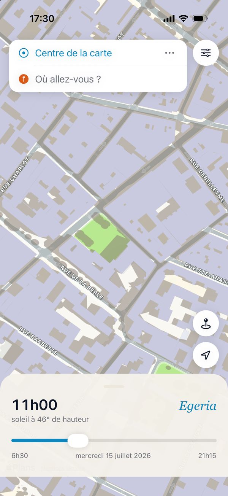
Les zones grises sont les ombres au sol, les bâtiments sont dessinés par-dessus.
Changer l'heure : faites glisser le curseur en bas de l'écran. Il va du lever au coucher du soleil, et la hauteur du soleil s'affiche sous l'heure. Les ombres suivent aussitôt.
Le jour est celui d'aujourd'hui, affiché sous le curseur.
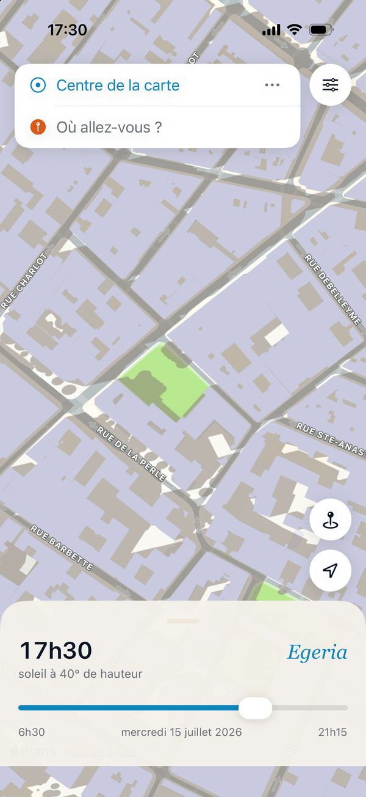
À 17 h 30, le soleil est passé à l'ouest : les ombres ont changé de côté des rues et se sont allongées.
Votre position : ce bouton centre la carte sur vous et la fait suivre vos déplacements.
Le soir et la nuit, il n'y a pas d'ombre à calculer : Egeria n'affiche rien quand le soleil est trop bas.
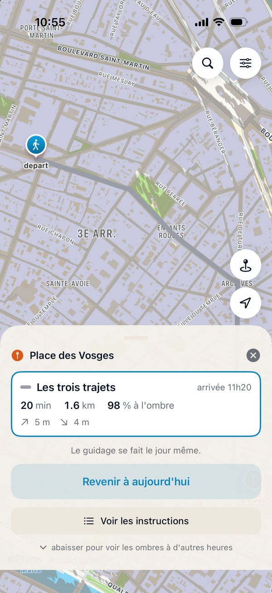
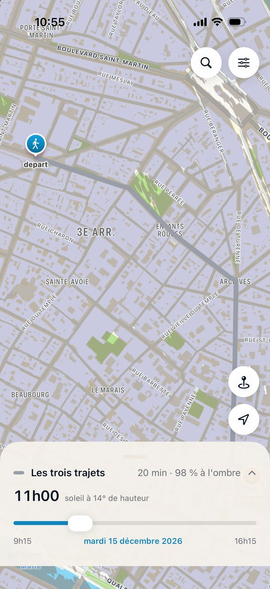
Préparer une sortie un autre jour : choisissez-le dans les Réglages, section Affichage, ligne Journée. Il s'affiche alors en bleu sous le curseur, et le curseur suit les heures de soleil de ce jour-là.
Le 15 décembre à 11 h, le soleil n'est qu'à 14° de hauteur : les ombres sont très longues, et les trois trajets de l'exemple se confondent, à 98 % d'ombre.
Pas de guidage un autre jour : il sert à préparer. Le bouton de guidage laisse alors la place à « Revenir à aujourd'hui ».
« Revenir à aujourd'hui » ramène au jour même. Au lancement suivant, Egeria revient aussi à aujourd'hui.
4. Choisir où aller
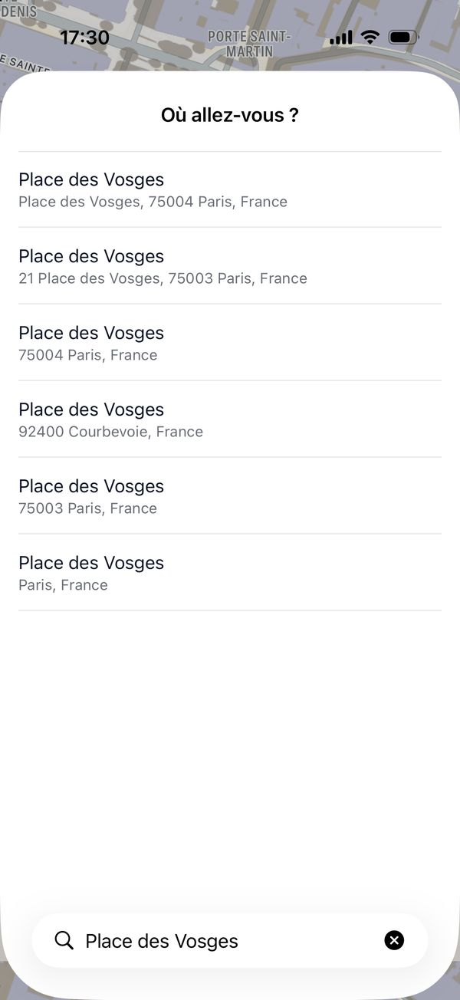
Touchez « Où allez-vous ? », en haut de l'écran, et tapez une adresse, un lieu, un monument. Quand des trajets sont affichés, la loupe relance une recherche.
Ou faites un appui long sur la carte, puis choisissez « Aller ici » ou « Partir d'ici ».
Le départ est votre position, ou le centre de la carte si Egeria n'a pas votre position. Touchez la ligne du haut pour en choisir un autre.
Une étape : touchez un lieu sur la carte puis « Point d'étape » pour ajouter un passage obligé, une boulangerie sur le chemin par exemple.
5. Les trois trajets
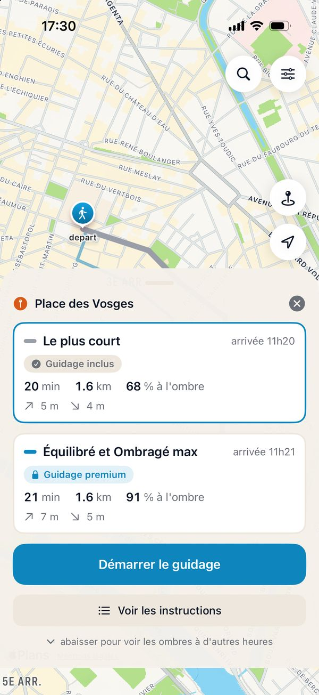
Egeria propose toujours trois trajets :
- Le plus court : la distance la plus courte, sans tenir compte du soleil.
- Équilibré : accepte un petit détour pour gagner de l'ombre.
- Ombragé max : cherche l'ombre avant tout, quitte à marcher plus longtemps.
Pour chacun : durée, distance, part du trajet à l'ombre, montées et descentes, heure d'arrivée. Quand deux trajets sont identiques, ils sont réunis sur une seule ligne ; quand les trois le sont, la ligne s'appelle « Les trois trajets ».
Dans l'exemple, Le plus court fait 1,6 km avec 68 % d'ombre ; Équilibré et Ombragé max, identiques ici, passent à 91 % pour une minute de plus.
Les avertissements en orange signalent ce que le trajet n'a pas pu éviter : escaliers, pentes fortes, passages étroits.
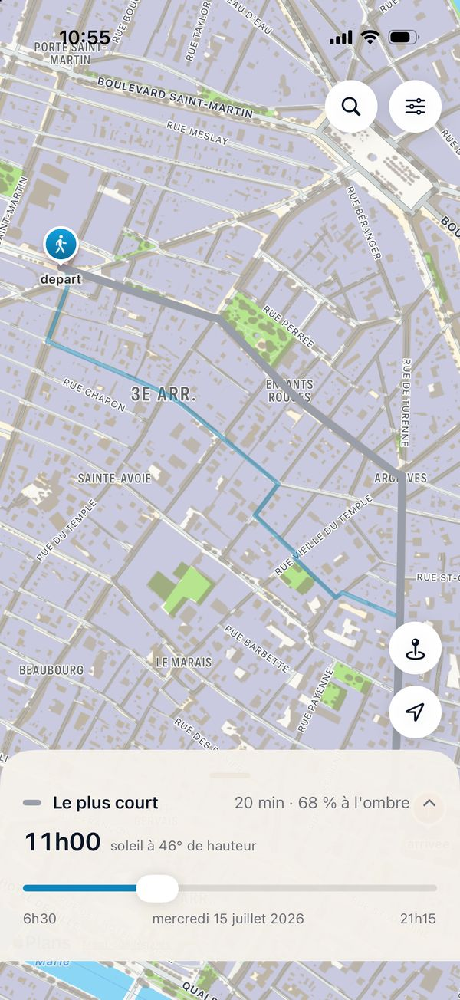
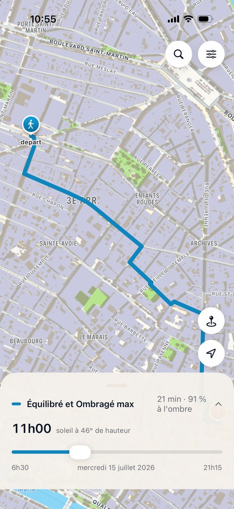
Voir les ombres le long du trajet : abaissez le panneau en le faisant glisser vers le bas. La carte apparaît avec le trajet choisi et les ombres, et le curseur permet de changer l'heure.
Le plus court (à gauche) suit les grands axes au soleil ; Ombragé max (à droite) passe par les petites rues du Marais, à l'ombre des immeubles.
Touchez un autre trajet dans le panneau pour l'afficher sur la carte.
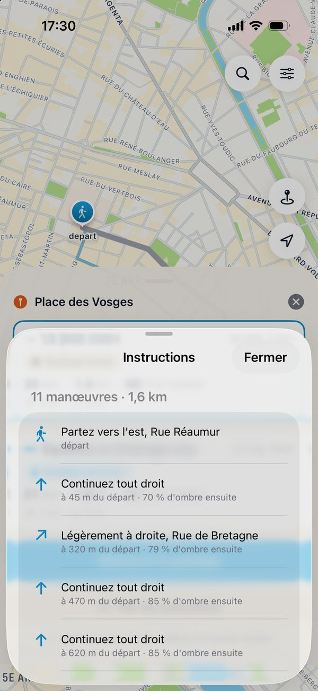
La liste des changements de direction, rue par rue, avec pour chacun la distance depuis le départ et la part d'ombre qui suit.
Lance le guidage sur le trajet choisi (chapitre 8).
6. Les réglages du parcours
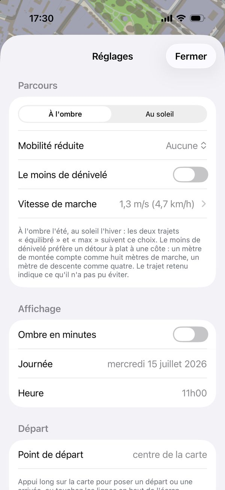
Le bouton Réglages, en haut à droite, ouvre les réglages.
La section Parcours contient quatre choix qui se cumulent : Soleil, Mobilité réduite, Le moins de dénivelé et Vitesse de marche.
Un changement recalcule aussitôt les trajets affichés.
Soleil
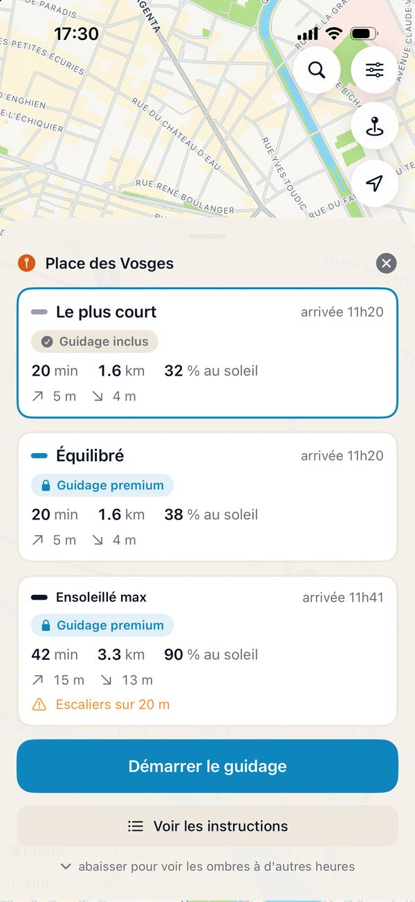
- À l'ombre : les trajets Équilibré et Ombragé max cherchent l'ombre. C'est le réglage de l'été.
- Au soleil : ils cherchent le soleil, et Ombragé max devient Ensoleillé max. Pratique l'hiver.
Au soleil, le trajet Ensoleillé max de l'exemple fait un grand détour : 3,3 km, mais 90 % au soleil.
Mobilité réduite
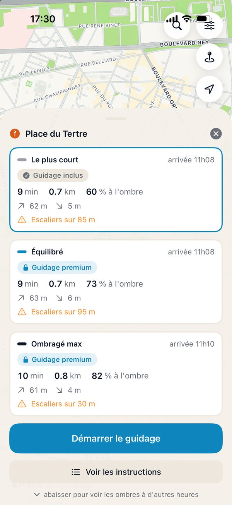
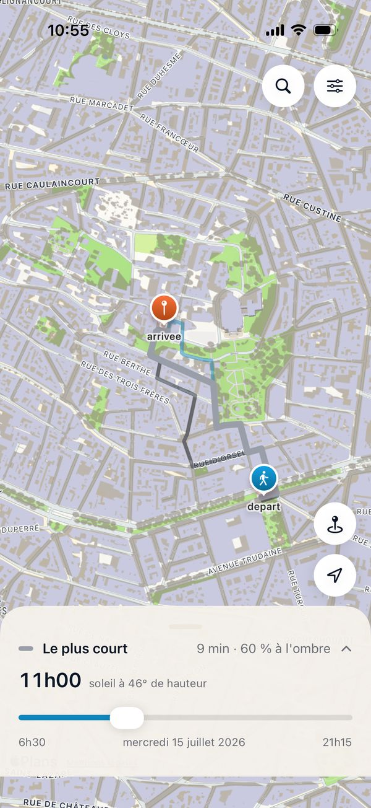
- Aucune : tous les chemins sont possibles.
- Difficultés à marcher : évite les escaliers et les pentes fortes (6 % ou plus). Un escalier avec rampe reste acceptable.
- Fauteuil ou poussette : évite aussi les passages de moins de 1,20 m, les pavés, graviers, sable et chemins de terre, et les lieux signalés inaccessibles en fauteuil.
L'exemple : de la station Anvers à la place du Tertre, à Montmartre. Sans réglage, le plus court fait 0,7 km par les escaliers.
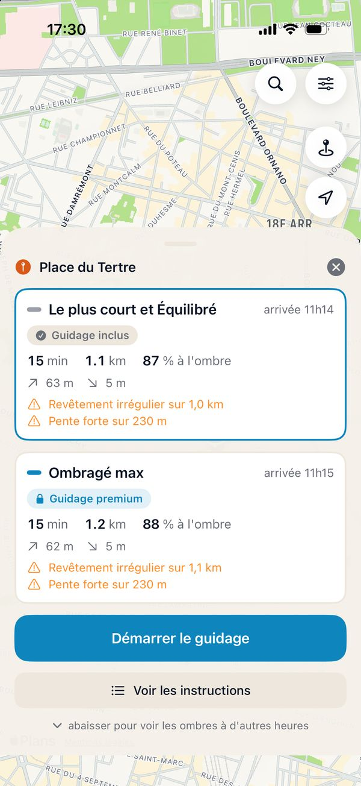
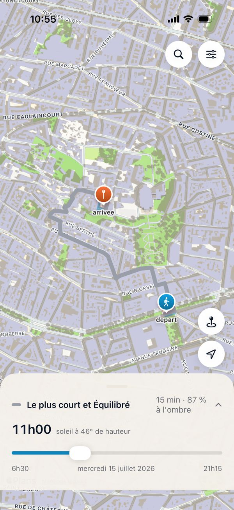
Avec « Difficultés à marcher », le trajet fait le tour par les rues : 1,1 km, sans un escalier.
Les avertissements signalent encore une pente forte et des pavés, qu'on ne peut pas éviter pour monter à la place du Tertre.
Un escalier n'est jamais totalement interdit, sinon certains trajets n'existeraient pas : s'il n'y a pas d'autre chemin, le trajet le signale.
Le moins de dénivelé
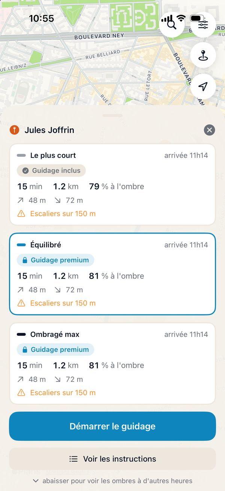
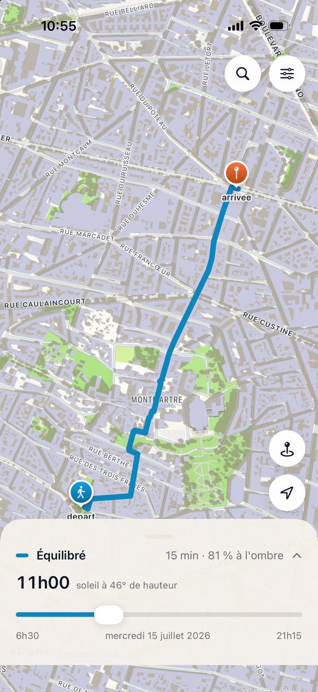
Préfère un détour à plat à une côte. Pour le calcul, un mètre de montée pèse comme huit mètres de marche à plat, un mètre de descente comme quatre.
Par exemple, franchir une butte de 10 m de haut pèse comme 120 m de marche : Egeria en fait le tour si le contournement ajoute moins que ça.
L'exemple : des Abbesses à Jules Joffrin. Sans le réglage, Équilibré passe par le haut de Montmartre : 1,2 km et 48 m de montée.
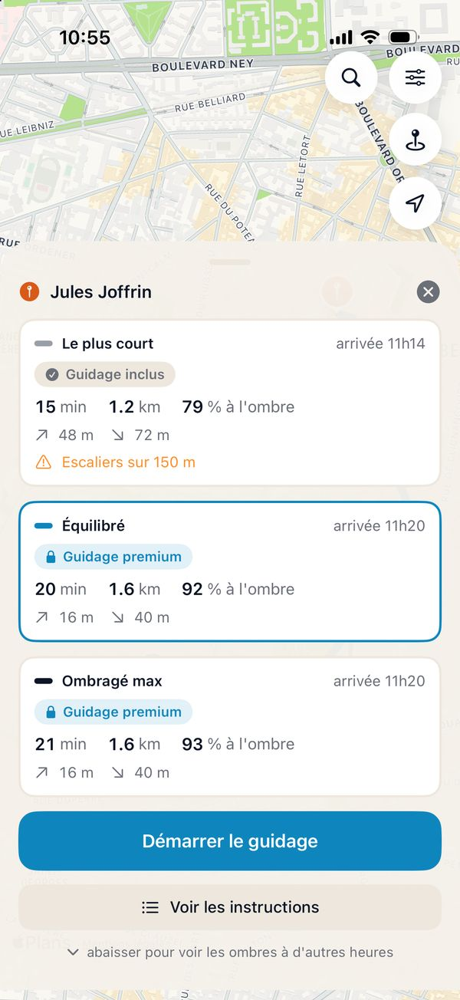
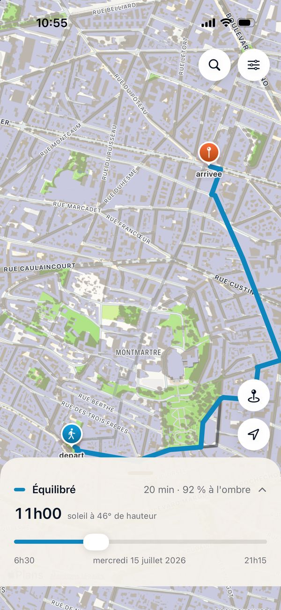
Avec le réglage, Équilibré contourne la butte par l'est : 1,6 km, mais 16 m de montée seulement.
Le plus court, lui, passe toujours par le haut : le contournement ajoute trop de distance.
Vitesse de marche
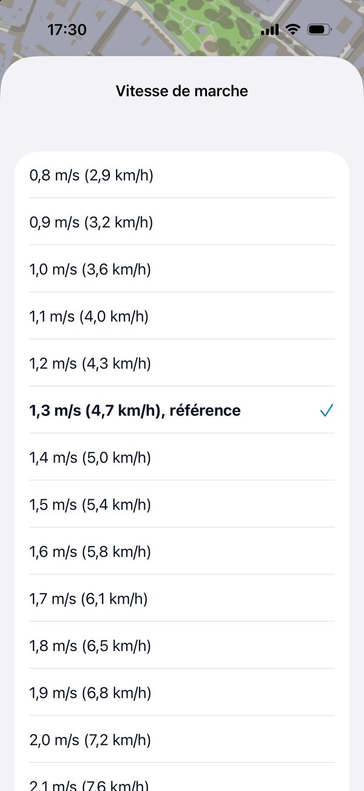
Elle sert à calculer la durée du trajet et l'heure de passage dans chaque rue, donc les ombres que vous y trouverez.
- 1,3 m/s (4,7 km/h), en gras : la vitesse de référence d'un piéton.
- Votre moyenne, en italique : calculée sur vos dix derniers guidages. Elle apparaît après quelques marches guidées.
Pendant le guidage, Egeria mesure votre allure réelle et s'en sert pour les recalculs, quel que soit ce réglage.
7. Les lieux utiles
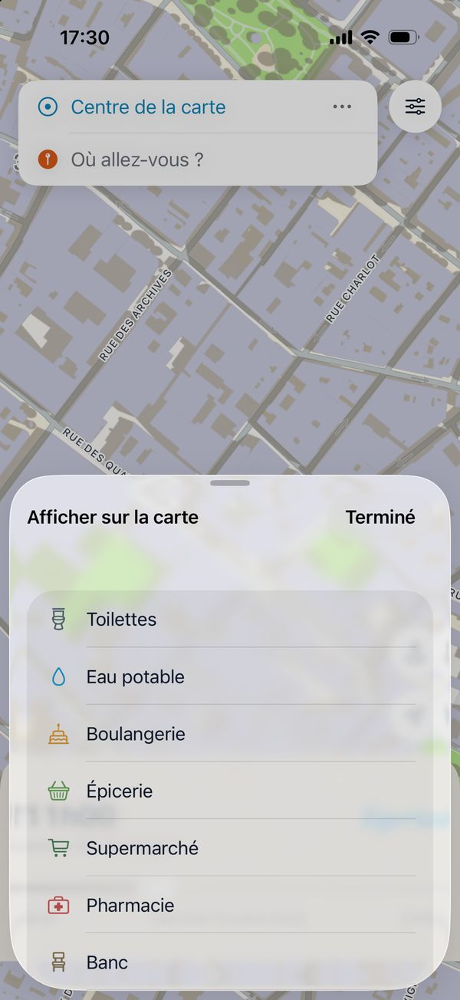
Le bouton des lieux affiche des lieux sur la carte. Cochez ceux qui vous intéressent :
toilettes, eau potable, boulangerie, épicerie, supermarché, pharmacie, banc, abri, café et bar, restaurant, musée et galerie, lieu de culte, gare et tram, ascenseur, monument.
Aucune catégorie n'est cochée au départ. « Tout décocher » les retire d'un coup. Le bouton passe en bleu quand des lieux sont affichés.
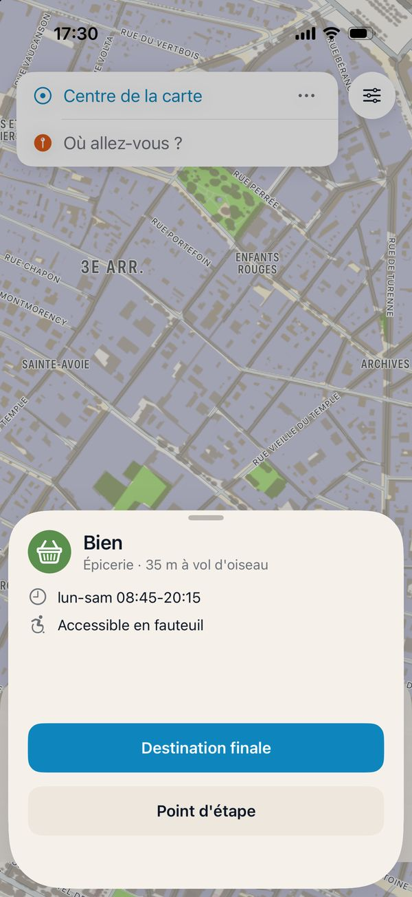
Touchez un lieu pour voir sa fiche : nom, catégorie, distance, horaires, accès en fauteuil quand il est connu.
Deux boutons : Destination finale pour y aller, Point d'étape pour y passer en chemin.
Les lieux viennent d'OpenStreetMap, la carte collaborative. Certaines informations, comme les horaires ou le caractère payant des toilettes, peuvent manquer ou dater.
8. Le guidage
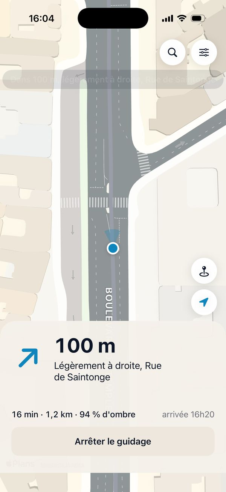
Choisissez un trajet puis touchez ce bouton. Le guidage sur Le plus court est inclus, Équilibré et Ombragé max demandent Egeria Premium. Le guidage se fait le jour même, à l'heure réelle : le trajet est recalculé au départ si besoin.
En bas, la prochaine direction en grand et sa distance, puis le temps, la distance et la part d'ombre qui restent, et l'heure d'arrivée. La carte vous suit et tourne avec vous.
Au milieu de la rue : Egeria suit l'axe des rues, votre position de guidage est donc au milieu de la chaussée. C'est vous qui choisissez le trottoir, celui à l'ombre de préférence.
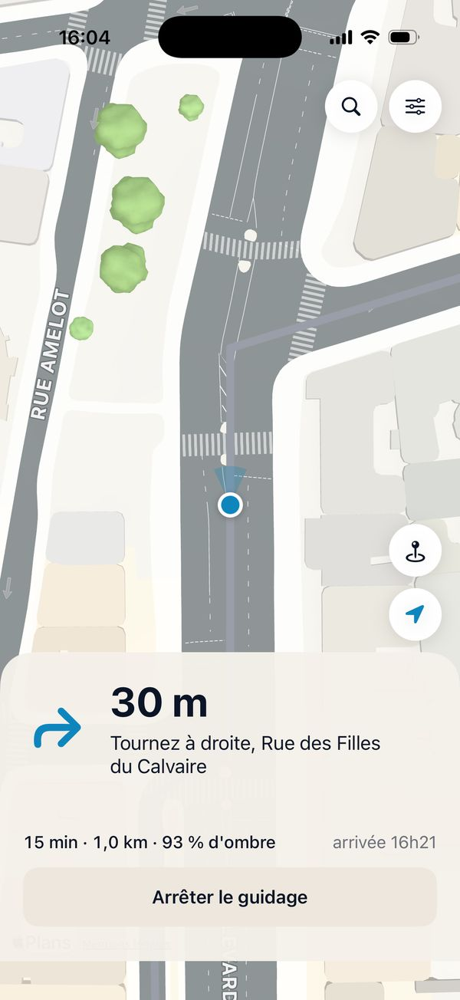
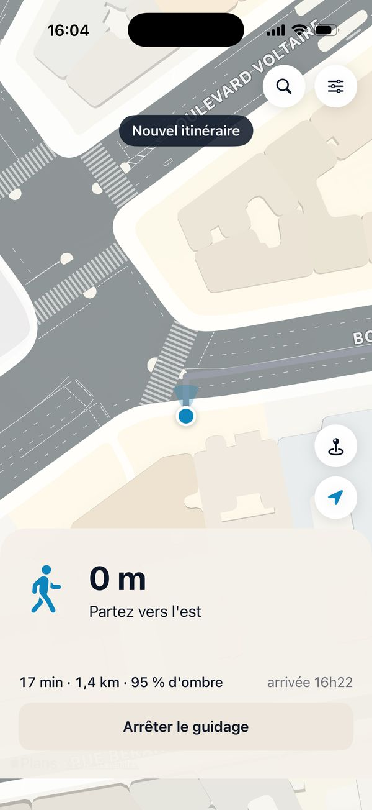
Les annonces : chaque direction est annoncée à 100 m puis au moment de tourner, dans un bandeau en haut de l'écran. Avec le guidage vocal, elles sont lues à voix haute.
Si vous sortez du trajet : Egeria le détecte en quelques secondes et calcule un nouveau chemin depuis votre position (« Nouvel itinéraire »). Elle propose une seule fois le demi-tour ; si vous continuez, elle cherche un chemin vers l'avant.
Les ombres pendant la marche : tant que la carte vous suit, les ombres ne sont pas dessinées, pour une carte plus lisible et moins de batterie. Touchez la carte pour les faire réapparaître.
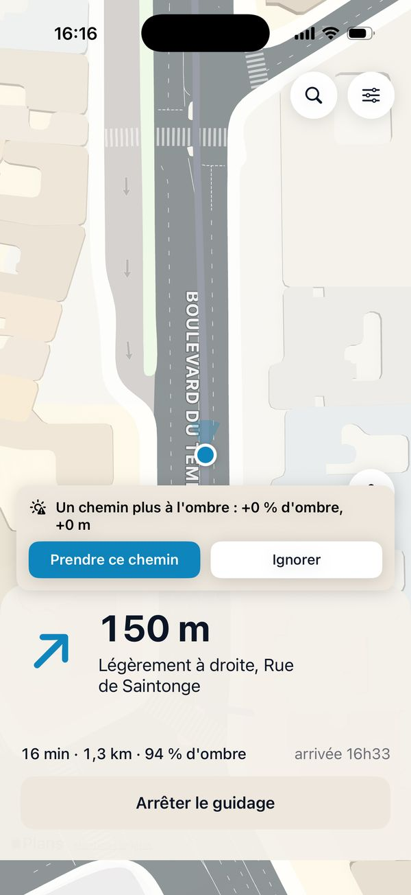
Un chemin plus à l'ombre : quand Egeria en trouve un, elle l'annonce et affiche le gain d'ombre et la distance en plus, avec deux boutons :
Sans réponse, le trajet ne change pas.
L'écran reste allumé tant qu'Egeria est devant vous. Si vous verrouillez l'iPhone, la prochaine direction reste affichée sur l'écran verrouillé.
L'arrivée est annoncée à moins de 15 m. Le guidage s'arrête seul une minute après, ou dès que vous vous éloignez de 50 m.
Arrête le guidage à tout moment.
9. L'Apple Watch
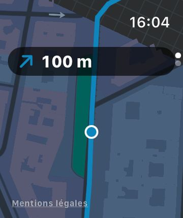
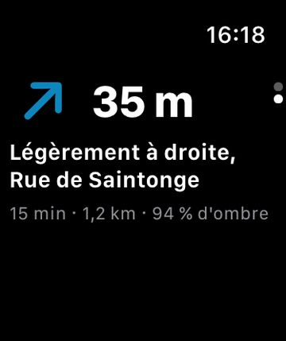
Egeria fonctionne uniquement avec l'Apple Watch. Elle ne calcule rien elle-même : elle suit le guidage de l'iPhone, qui doit rester avec vous.
Rien à lancer : dès que le guidage démarre sur l'iPhone, il s'affiche automatiquement sur la montre.
Deux pages, qu'on fait défiler avec la couronne :
- la carte : votre trajet en bleu, votre position et la prochaine direction. Elle tourne avec vous. Les ombres n'y sont pas dessinées.
- les instructions : la prochaine direction en grand, sa distance, puis le temps, la distance et la part d'ombre qui restent.
La montre tape au poignet, différemment selon le cas : à chaque direction annoncée, quand vous sortez du trajet, à l'arrivée.
10. Egeria Premium
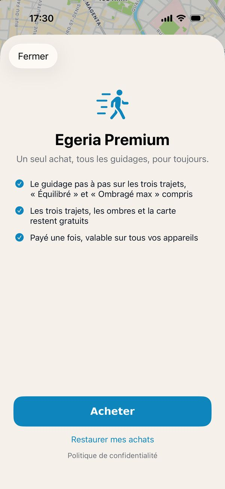
Gratuit pour tout le monde : la carte, les ombres, les trois trajets, les lieux utiles, et le guidage sur Le plus court.
Egeria Premium ouvre le guidage sur Équilibré et Ombragé max. Un seul achat, pour toujours, valable sur tous vos appareils, sans abonnement ni compte à créer. Le prix s'affiche sur le bouton d'achat.
Changé d'iPhone ? Réglages, section Version, « Restaurer mes achats ».
11. Les autres réglages
- Ombre en minutes : affiche le temps passé à l'ombre plutôt qu'un pourcentage.
- Journée : choisir un autre jour pour préparer une sortie, et « Revenir à aujourd'hui ».
- Heure : rappelle l'heure affichée sur la carte.
- Départ : rappelle le point de départ choisi, et permet de revenir au centre de la carte.
- Guidage vocal : lit chaque direction à voix haute, une fois à distance et une fois au moment de tourner. La musique baisse pendant l'annonce.
- Cache sur l'appareil : la place prise par les cartes déjà téléchargées, et un bouton pour la libérer. Elles reviendront au prochain passage.
- À propos : les zones couvertes et l'origine des données.
12. Questions fréquentes
Où fonctionne Egeria ? Dans les grandes villes françaises et leur agglomération, la liste complète est dans Réglages, À propos. Ailleurs, la carte s'affiche sans ombres ni itinéraires. D'autres villes arrivent régulièrement.
Faut-il du réseau ? Oui pour découvrir un quartier, non pour y revenir.
Egeria consomme-t-elle beaucoup de batterie ? Pendant le guidage, l'écran reste allumé. Les ombres ne sont pas redessinées pendant que la carte vous suit, pour économiser.
Pourquoi un bâtiment n'a-t-il pas d'ombre ? Sa hauteur manque parfois dans les données publiques.
Et les arbres ? Ils sont pris en compte là où la ville publie leur inventaire, à Paris par exemple. Ils sont dessinés avec leurs feuilles toute l'année : en hiver, leur ombre est plus grande que la réalité.
Pourquoi pas de mode nuit ? Sans soleil, il n'y a pas d'ombre à chercher.
Egeria connaît-elle ma position ? Seul votre iPhone la connaît. Rien n'est envoyé.
Contact : contact.egeria.app@gmail.com